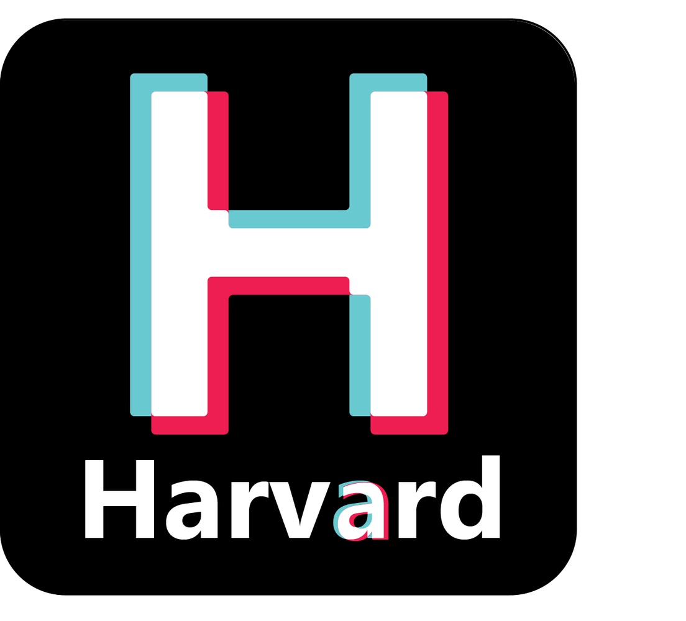
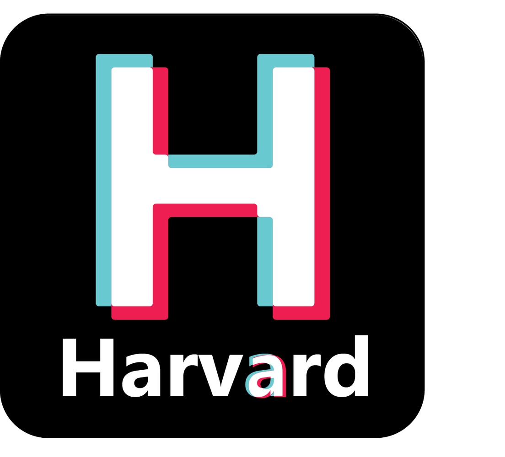

Sara's Portfolio
Welcome to my portfolio!
About Me
Welcome to my portfolio! I'm Sara Qu, a rising junior at Harvard concentrating in Computer Science. On campus I am mainly involved in AADT (Asian American Dance Troup), Breakers, and The Crimson as a web and print designer. In my spare time, I like to swim and bake. My home is based in New York City where I frequently go into the city to catch up with friends over a meal or by meandering around.
Works
Below are some links to some of the fun projects I've done in the past!
Gudetama Dash: An android game.
SmartCloset: A design prototype for a shopping app that allows you to more easily find correct sizes and fit.
The Crimson : Graphic designs for Fifteen Minutes, the monthly magazine publication by The Crimson.
 
